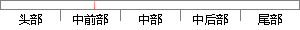

该系统现有两种方法判定识别结果。
片段位置图

相似结果|
相似片段 1：两种算法进行识别，将识别结果和其对应的情感进行对比并统计。最后根据统计结果，总结出一张二维判定表。根据判定表，在BP算法和SVm算法的识别结果之间作出选择。在样本不断增加的情况下，对判定表做进一步的修正。融合算法的目的是利用不同训练方法的优势，从而进一步提高系统的识别率。
相似片段 2：5-3-2 识别结果分析上面提到了两种判定步态的方法，分别是第三章中用起始最大角度判定和基于数据融合的判定方法，两种方法均能达到实验目的。第一种方法第二种第一类路况上坡上楼梯下坡下楼梯图 5.5
相似片段 3：的虚拟现实系统。系统可以用两种方式柬判定手的姿势。第一种方法是通过精确测量的方式直接识别出人体上肢尤其是手掌和手指的空间姿态，这种方法对于动作捕捉硬件的精度要求非常高。第二种方法是通过对数据线传入电脑的信息
|
※ 片段修改建议 ※
近似词参考：- 系统：体系
- 判定：鉴定 剖断 判断 断定
- 识别：辨认
- 结果：成果 成绩 成效 后果 了局 效果
系统自动生成语句：该体系现有两种方法鉴定辨认成果。
注：本片段修改建议为系统自动生成，仅供参考。